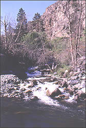

| cooling |
| home page |
|  | , so we know that water temperatures from near-shore sites differ from temperatures offshore. . NDBC Science Pages Does water temperature differ between near-shore and offshore sites. The graph shows the average monthly water temperatures from Station 46029 and Station 46005. These two stations are on the same latitude -- about 46 degrees North latitude. |
| . Many thermal pollution problems are a result of anthropogenic activities (see "sources"). However, some water quality problems occur because of natural temperature fluctuations. The following information is provided to explain why temperature affects water quality and how anthropogenic activities may enhance the negative effects of natural temperature changes. First, water possesses many important thermal qualities. |